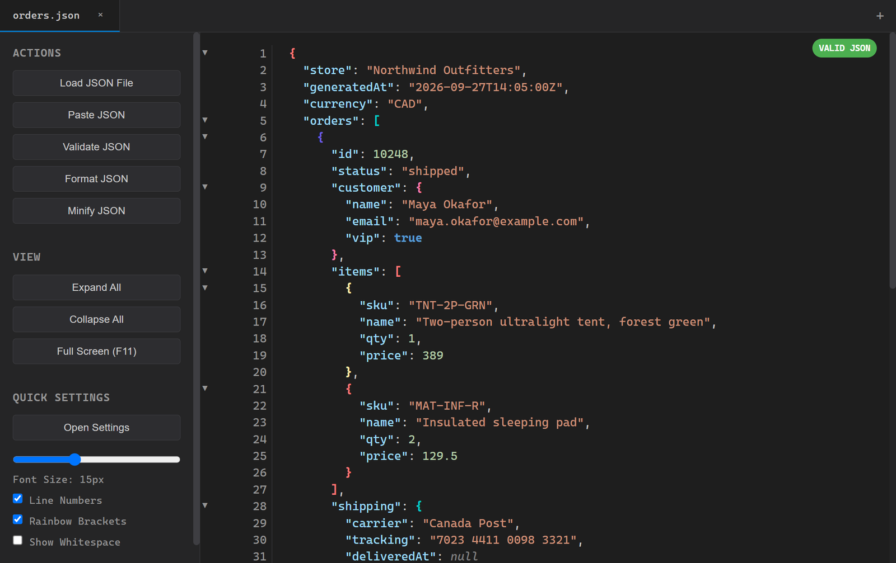

JSON you can actually read.
JSONinja is a small, free viewer for JSON files. Open one and it's formatted, colored and foldable, however big it is. For Windows, macOS and Linux.

Made for the files you actually get
API responses, config dumps and exports that arrive as one enormous line. JSONinja opens them fast and lets you find your way around.
Opening files
- Big files
- Large files render in chunks so the window stays responsive, and anything over 50,000 lines switches to virtual scrolling, drawing only what's on screen.
- Tabs
- Keep several files open at once, or paste JSON straight into a new tab.
- Double-click, drag and drop, recent files
- The installer registers JSONinja for
.jsonfiles, and one menu item takes you to where Windows lets you make it the default. You can also drop files onto the window or reopen them from the recent list. - Odd encodings
- Files saved as Latin-1 are detected and shown correctly, and you can reload any file as UTF-8, Latin-1 or Windows-1252.
Reading
- Fold anything
- Collapse any object or array from the gutter, or everything at once with Ctrl+Shift+E.
- Rainbow brackets
- Each nesting level gets its own bracket color, so you can see where a block ends.
- Search keys, values or both
- Matches are highlighted as you type. Press Enter for the next one.
- Search within keys
- Look for a value only under the keys you name, like finding a customer in
nameandemailfields while skipping notes and IDs. - Validate, format and minify
- See at a glance whether a file parses. Pretty-print it, or squash it back to one line.
Making it yours
- Four themes
- Dark, Light, GitHub and Monokai.
- Fonts and colors
- Pick a coding font and size, and set your own colors for keys, strings, numbers, booleans and null.
- Line numbers and whitespace
- Turn line numbers off, or show tabs and spaces when they matter.
Safety and updates
- Nothing in a file can run
- JSON is always shown as text. A strict Content Security Policy blocks scripts, and the viewer can only read the files you open.
- Signed updates
- When a new version comes out, JSONinja offers to install it and restart. Updates are signed, and anything else is refused. You can turn the check off in the Help menu.
- Small and open source
- It uses the web engine already built into your system, so the Windows installer is about 2 MB. MIT licensed and built in the open.
Keyboard shortcuts
On a Mac, use ⌘ instead of Ctrl.
- Ctrl+O
- Open a file
- Ctrl+T
- New tab
- Ctrl+W
- Close tab
- Ctrl+F
- Search
- Enter
- Next match
- Shift+Enter
- Previous match
- Ctrl+E
- Expand all
- Ctrl+Shift+E
- Collapse all
- Ctrl+,
- Settings
- Ctrl+= - 0
- Zoom in, out, reset
- F11
- Hide the sidebar
- Esc
- Close search or a dialog
Downloads
Every file comes from the latest release on GitHub.
| Download | Size | Works on |
|---|---|---|
| Windows installer | Windows 10 and 11. Sets up the .json file association and automatic updates. | |
| Windows portable | A single exe with nothing to install. Needs the WebView2 runtime, which Windows 11 and most Windows 10 PCs already have. | |
| macOS | Apple Silicon and Intel. It isn't notarized yet, so right-click the app and choose Open the first time. | |
| Linux AppImage | Most x64 distributions, with automatic updates. | |
| Linux .deb | Debian and Ubuntu 22.04 or later. | |
| Linux .rpm | Fedora and openSUSE. |
.json files still opening in another app on Windows? Use File > System Integration > Make JSONinja the Default for .json and pick JSONinja in Settings. If your old app keeps opening them, which is a known Windows 11 25H2 issue when you'd chosen an app before, click Reset at the bottom of Settings > Apps > Default apps and choose JSONinja again. That reset clears your other default apps too.
Prefer to build it yourself? You need Node.js and Rust; the README has the steps.